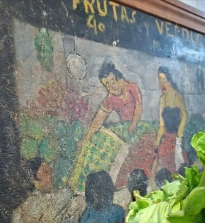
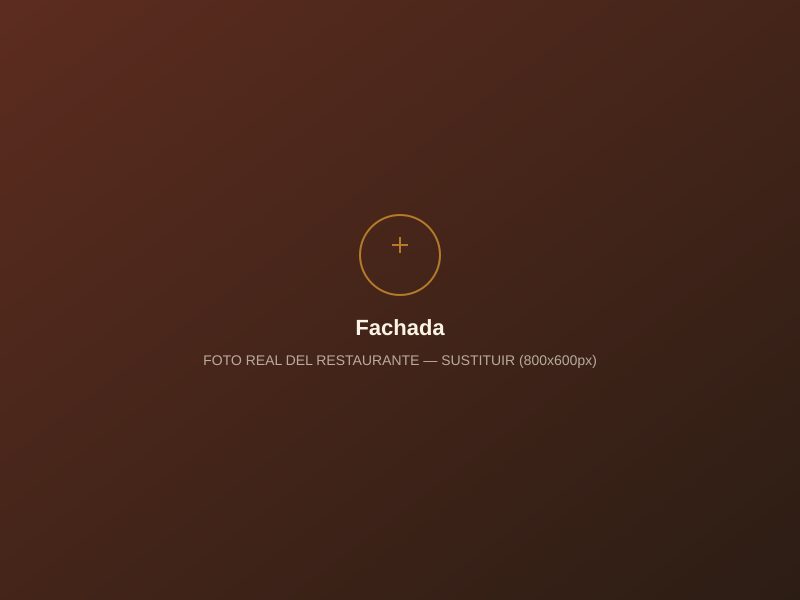
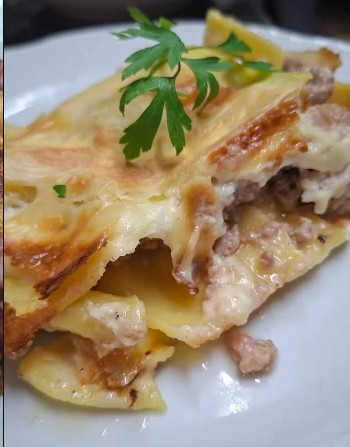
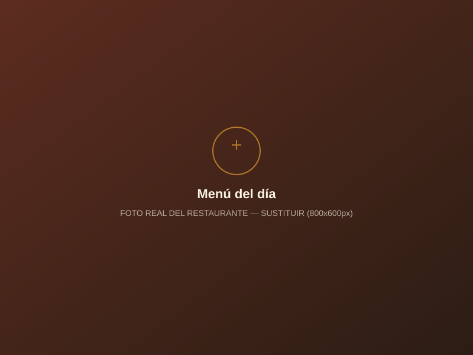
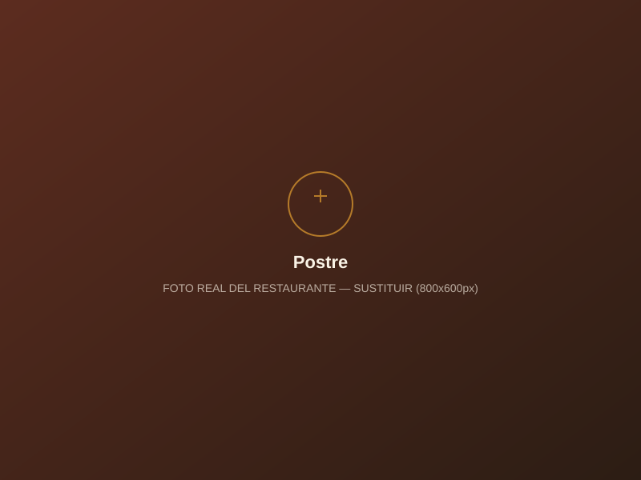
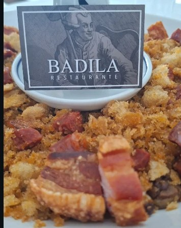
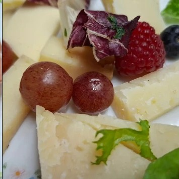
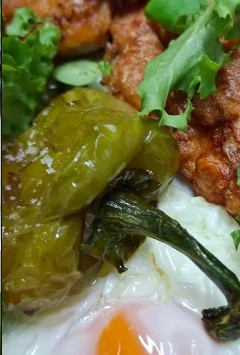
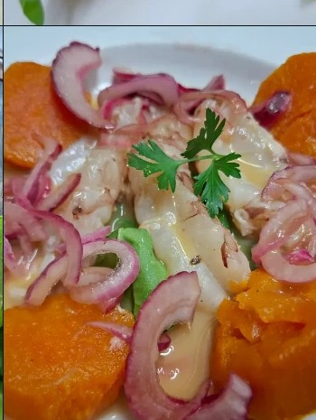

Lavapiés, Madrid
Una casa de comidas en Lavapiés donde el producto de temporada y la cocina casera son protagonistas.

Nuestra casa
Badila es una casa de comidas situada en el corazón de Lavapiés, centrada en una cocina de mercado, producto fresco y platos que cambian según la temporada y la disponibilidad del producto.
De toda la vida
Platos que han sido mencionados en distintas ocasiones asociados a la casa. Su disponibilidad varía según el día y la temporada.
Uno de los platos más citados de la casa.
Sujeto a disponibilidadCocina de cuchara al estilo casero.
Sujeto a disponibilidadSegún lonja y disponibilidad del día.
Sujeto a disponibilidadPresencia habitual en la carta de la casa.
Sujeto a disponibilidadRepostería tradicional de casa de comidas.
Sujeto a disponibilidadUn vistazo a la casa
Fotografías reales del restaurante (recortes provisionales de Instagram) junto con algunas imágenes de muestra aún pendientes de sustituir.








Ubicación
Restaurante Badila
Calle de San Pedro Mártir, 6
28012 Madrid
Metro Tirso de Molina
Cómo llegarHorario
| Lunes | Cerrado |
| Martes | 13:30 – 17:30 |
| Miércoles | 13:30 – 17:30 |
| Jueves | 13:30 – 17:00 |
| Viernes | 13:30 – 17:30 |
| Sábado | 13:30 – 17:30 |
| Domingo | 13:30 – 17:30 |
Horarios sujetos a cambios. Confirmar antes de visitar.
Opiniones
Espacio reservado para reseñas reales. Se completará con opiniones verificadas de clientes.